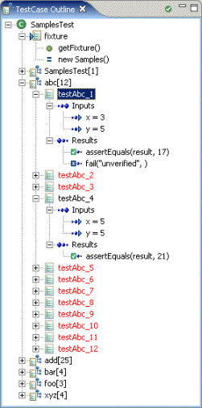
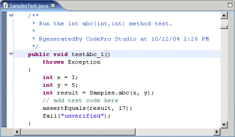
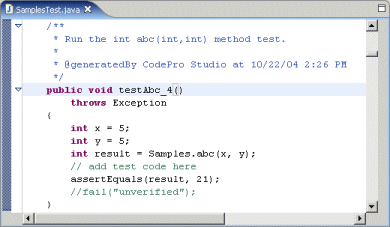

JUnit Test Case Outline View
|  |
The JUnit Test Case Outline view shows the contents of a JUnit Test Case structured in a way that is more convenient for certain kinds of browsing. One of the primary advantages of this view is that it groups each of the test methods based on the target method that is being tested. This not only makes it easier to see which target methods are being tested and how many test methods there are for each one, it also helps you find all of the test methods that are testing each target method, no matter where they are located in the file and no matter what they might be named. In addition, this view helps you locate several vital pieces of information about each test method, such as the fixture being used, the values being passed in to the target method, and the tests that will be applied to the resulting value. Outline StructureThe top level elements in the tree represent individual classes that are, either directly or indirectly, subclasses of junit.framework.TestCase. The children of these test classes are either test fixtures or groups of test methods. A test fixture is a field whose type is the same as the target type (the type being tested). Its children include the accessor method used to get its value, if there is one, and the value assigned to the field. |
As stated previously, test methods are grouped together based on the target method being tested. The label for the groups contains the name of the target method and the number of test methods within the group. The children are individual test methods.
Each test method has two children representing the inputs to the test method, including the test fixture on which the method will be invoked, and the results of the test. The results consist of either the exception that is expected to be thrown by the test method or the sequence of assertions that will be tested after the method has returned.
Test methods are marked (currently by being displayed in a red font) if the results of the test have not been verified.

Deleting or commenting out the fail line will mark the method as verified.

Menu Items

The Mark Verified menu item (and a corresponding action bar button) will automatically remove from a test method the marker used to indicate that the method has not yet been verified. This will make it easier for developers to mark tests as having been verified.